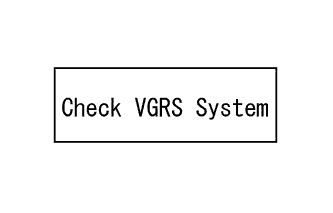
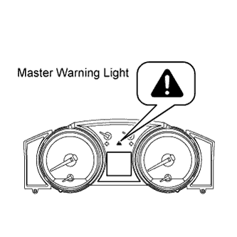

VARIABLE GEAR RATIO STEERING SYSTEM > DIAGNOSIS SYSTEM |
| FUNCTION OF WARNING LIGHT AND MESSAGE |
 |
If a malfunction occurs during system operation, the master warning light on the combination meter comes on and "Check VGRS System" will be displayed on the multi-information display to inform the driver of the system malfunction.
| DTC |
Normal mode.
DTCs are stored in the steering control ECU and read using the tester (Click here).
Test mode.
By switching from normal mode to test mode, the steering angle sensor can be inspected (Click here).
| CHECK MASTER WARNING LIGHT |
 |
Turn the engine switch on (IG).
Check that the master warning light comes on for 2 seconds.
| Trouble Area | See Procedure |
| Master warning light circuit |
Click here
|